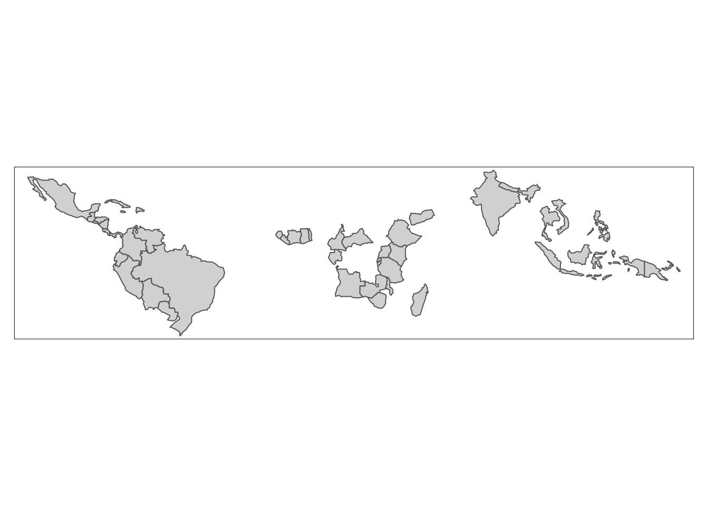

rm(list = ls())
library(sf)
library(spData)
library(tmap)
library(tidyverse)In this lab, we’ll explore the basics of manipulating vector data in R using the sf package. The following materials are modified from Chapter 3 of Geocomputation with R by Rovin Lovelace.
Set Up
Let’s load all necessary packages:
Handling sf Objects
Let’s start by looking at how we can construct a sf object. First, we create a geometry for London by supplying a point and CRS. Then, we supply some non-geographic attributes!
lnd_point <- st_point(c(0.1, 51.5))
lnd_geom <- st_sfc(lnd_point, crs = 4326)
lnd_attrib <- data.frame(
name = "London",
temperature = 25,
date = as.Date("2017-06-21")
)
lnd_sf <- st_sf(lnd_attrib, geometry = lnd_geom)
class(lnd_sf)[1] "sf" "data.frame"We can also check out what the CRS looks like:
st_crs(lnd_sf)Coordinate Reference System:
User input: EPSG:4326
wkt:
GEOGCRS["WGS 84",
ENSEMBLE["World Geodetic System 1984 ensemble",
MEMBER["World Geodetic System 1984 (Transit)"],
MEMBER["World Geodetic System 1984 (G730)"],
MEMBER["World Geodetic System 1984 (G873)"],
MEMBER["World Geodetic System 1984 (G1150)"],
MEMBER["World Geodetic System 1984 (G1674)"],
MEMBER["World Geodetic System 1984 (G1762)"],
MEMBER["World Geodetic System 1984 (G2139)"],
ELLIPSOID["WGS 84",6378137,298.257223563,
LENGTHUNIT["metre",1]],
ENSEMBLEACCURACY[2.0]],
PRIMEM["Greenwich",0,
ANGLEUNIT["degree",0.0174532925199433]],
CS[ellipsoidal,2],
AXIS["geodetic latitude (Lat)",north,
ORDER[1],
ANGLEUNIT["degree",0.0174532925199433]],
AXIS["geodetic longitude (Lon)",east,
ORDER[2],
ANGLEUNIT["degree",0.0174532925199433]],
USAGE[
SCOPE["Horizontal component of 3D system."],
AREA["World."],
BBOX[-90,-180,90,180]],
ID["EPSG",4326]]st_crs(lnd_sf)$IsGeographic[1] TRUEst_crs(lnd_sf)$proj4string[1] "+proj=longlat +datum=WGS84 +no_defs"Now let’s look at an existing sf object representing countries of the world:
class(world)[1] "sf" "tbl_df" "tbl" "data.frame"dim(world)[1] 177 11names(world) [1] "iso_a2" "name_long" "continent" "region_un" "subregion" "type"
[7] "area_km2" "pop" "lifeExp" "gdpPercap" "geom" We can see that this object contains both spatial data (“geom” column) and attributes about those geometries. We can perform operations on the attribute data, just like we would with a normal data frame.
summary(world$lifeExp) Min. 1st Qu. Median Mean 3rd Qu. Max. NA's
50.62 64.96 72.87 70.85 76.78 83.59 10 The geometry column is “sticky”, meaning it will stick around unless we explicitly get rid of it. To convert this object into a data frame, we need to drop the geometry column.
world_df <- st_drop_geometry(world)
class(world_df)[1] "tbl_df" "tbl" "data.frame"names(world_df) [1] "iso_a2" "name_long" "continent" "region_un" "subregion" "type"
[7] "area_km2" "pop" "lifeExp" "gdpPercap"ncol(world)[1] 11ncol(world_df)[1] 10Vector Attribute Subsetting
The especially great things about sf objects is that we can use tidyverse functions on them!
We can select columns…
world %>%
select(name_long, pop)Or remove columns…
world %>%
select(-subregion, -area_km2)Or select AND rename columns
world %>%
select(name = name_long, population = pop)Or filter observations based on variables
world1 <- world %>%
filter(area_km2 < 10000)
summary(world1$area_km2) Min. 1st Qu. Median Mean 3rd Qu. Max.
2417 4412 6207 5986 7614 9225 world2 <- world %>%
filter(lifeExp >= 80)
nrow(world2)[1] 24Chaining Commands with Pipes
Because we can use dplyr functions with sf objects, we can chain together commands using the pipe operator.
Let’s try to find the country in Asia with the highest life expectancy
world %>%
filter(continent == "Asia") %>%
select(name_long, continent, lifeExp) %>%
slice_max(lifeExp)Vector Attribute Aggregation
Aggregation is the process of summarizing data with one or more ‘grouping’ variables. For example, using the ‘world’ which provides information on countries of the world, we might want to aggregate to the level of continents. It is important to note that aggregating data attributes is a different process from aggregating geographic data, which we will cover later.
Let’s try to find the total population within each continent:
world %>%
group_by(continent) %>%
summarize(population = sum(pop, na.rm = TRUE))Let’s also find the total area and number of countries in each continent:
world %>%
group_by(continent) %>%
summarize(population = sum(pop, na.rm = TRUE),
area_km2 = sum(area_km2, na.rm = TRUE),
n_countries = n())Building on this, let’s find the population density of each continent, find the continent’s with highest density and arrange by the number of countries. We’ll drop the geometry column to speed things up.
world %>%
st_drop_geometry() %>%
group_by(continent) %>%
summarize(population = sum(pop, na.rm = TRUE),
area_km2 = sum(area_km2, na.rm = TRUE),
n_countries = n()) %>%
mutate(density = round(population/area_km2)) %>%
slice_max(density, n = 3) %>%
arrange(desc(n_countries))Vector Attribute Joining
A critical part of many data science workflows is combining data sets based on common attributes. In R, we do this using multiple join functions, which follow SQL conventions.
Let’s start by looking a data set on national coffee production:
head(coffee_data)nrow(coffee_data)[1] 47nrow(world)[1] 177We can combine this with the world data set, but joining based on country’s names:
world_coffee <- left_join(world, coffee_data, by = "name_long")
names(world_coffee) [1] "iso_a2" "name_long" "continent"
[4] "region_un" "subregion" "type"
[7] "area_km2" "pop" "lifeExp"
[10] "gdpPercap" "geom" "coffee_production_2016"
[13] "coffee_production_2017"And plot what this looks like…
tm_shape(world_coffee) +
tm_polygons(fill = "coffee_production_2017")
If we just wanted to keep countries that do have coffee data, we could use an inner join:
world_coffee_inner <- inner_join(world, coffee_data)
nrow(world_coffee_inner)[1] 45It looks like we lost some countries with coffee data, so let’s figure out what’s going on. We can find rows that didn’t match using the setdiff function.
setdiff(coffee_data$name_long, world$name_long)We see that one of the issues is that the two data sets use different naming conventions for the Democratic Republic of the Congo. We can use a string matching function to figure out what the DRC is called in the world data set.
drc <- stringr::str_subset(world$name_long, "Dem*.+Congo")Now we can update the coffee data set with the matching name for the DRC:
coffee_data$name_long[grepl("Congo,", coffee_data$name_long)] -> drcAnd we can try the inner join again and hopefully the DRC now matches:
world_coffee_inner <- inner_join(world, coffee_data)
nrow(world_coffee_inner)[1] 45Let’s visualize what a the inner join did to our spatial object:
tm_shape(world_coffee_inner) +
tm_polygons(fill = "coffee_production_2017",
title = "Coffee production (2017)") +
tm_layout(legend.outside = TRUE)
And let’s test what would happen if we flipped the order of the data sets in the join:
coffee_world <- left_join(coffee_data, world, by = "name_long")
class(coffee_world)[1] "tbl_df" "tbl" "data.frame"names(coffee_world) [1] "name_long" "coffee_production_2016" "coffee_production_2017"
[4] "iso_a2" "continent" "region_un"
[7] "subregion" "type" "area_km2"
[10] "pop" "lifeExp" "gdpPercap"
[13] "geom"